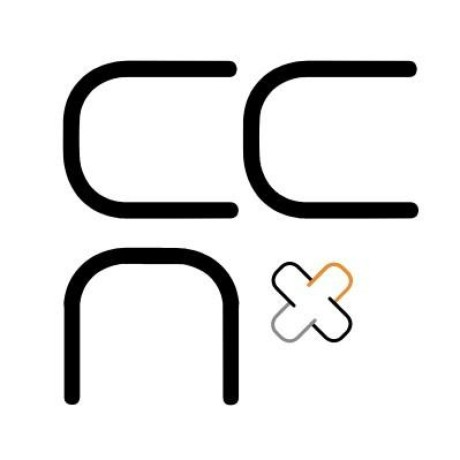

Protocol and stack comparison
PRP editorial comparison · Revision 4.09 · Updated 2026-10-20
53 criteria × 26 stacks; 163 Pending cells.
PRP website · Methodology and limits · Download structured data · Logo credits
Yes No Pending
Click a cell for evidence and qualifications. Expand a criterion for its definition. Results describe the selected stack and documented capabilities, not implementation certification. Pending means insufficient evidence, not unsupported.
| Criterion |  | | IP (IPv4/IPv6) |  |  |  |  |  |  |  |  |  |  |  |  |  |  |  |  |  |  |  | LISP | ILNPv6 | ||
|---|---|---|---|---|---|---|---|---|---|---|---|---|---|---|---|---|---|---|---|---|---|---|---|---|---|---|
F01 · Operates without IPv4/IPv6 throughout the stackDefinitionNo mandatory IP layer, including operational support. | Yes | No | No | No | No | Yes | No | No | No | No | No | No | No | Yes | No | Yes | No | Yes | Yes | Yes | No | No | No | No | No | No |
F02 · Needs no participant IP address configurationDefinitionParticipant-facing addressing uses a self-generated address or a non-IP participant namespace; no assigned participant IP address is needed at that layer. Underlay and relay transport IP configuration are excluded uniformly and remain assessed by F01/F03. This is not zero-configuration deployment: other identifiers, peers, trust and permissions may need provisioning. | Yes | Yes | No | Yes | Yes | Yes | Yes | Yes | Yes | Yes | Yes | No | No | Yes | Yes | Yes | Yes | Yes | Yes | Yes | No | No | Yes | Yes | No | Yes |
F03 · Routed operation needs no topology-dependent address configurationDefinitionNo network-prefix, subnet or locator assignment tied to attachment in the selected stack, including its underlay. DHCP/SLAAC automate such configuration rather than remove it. Locally generated identities and session-local forwarding labels do not count. Excludes route policy, trust, permissions and physical/link setup. | Yes | No | No | No | No | Yes | No | No | No | No | No | No | No | Yes | No | Yes | No | Yes | Yes | Yes | No | No | No | No | No | No |
F04 · Cryptographic reference independent of locationDefinitionParticipant or service reference verifiable independently of its locator; not necessarily self-certifying. | Yes | Yes | No | Yes | Yes | Yes | Yes | Yes | Yes | Yes | Yes | Yes | No | Yes | Yes | Yes | Yes | Yes | No | No | No | Yes | Yes | Yes | No | No |
F05 · Peer continuity and authorization across sessionsDefinitionA peer continuity and authorization context survives the end of a session and a change of carrier. No particular object name, data structure or protocol-specific lifecycle is required. A stable identity key alone does not establish retained authorization context. | Yes | Yes | No | Yes | Yes | Yes | No | Yes | No | No | No | Yes | No | No | No | Yes | No | No | No | No | No | Yes | Yes | No | No | No |
F06 · Encrypts content between communicating endpointsDefinitionProtection between the compared endpoints, not merely a transit link. | Yes | Yes | No | Yes | Yes | Yes | Yes | Yes | Yes | Yes | Yes | Yes | No | Yes | No | Yes | Yes | No | No | No | No | Yes | Yes | No | No | No |
F07 · Cryptographically authenticates a remote participantDefinitionRemote identity or signed authorship proof; does not imply civil identity, mutual authentication or current presence. | Yes | Yes | No | Yes | Yes | Yes | Yes | Yes | Yes | Yes | Yes | Yes | No | Yes | Yes | Yes | Yes | Yes | No | No | No | Yes | Yes | Yes | No | No |
F08 · Preserves a transport connection across path changesDefinitionThe same connection survives; reconnecting with the same contact does not qualify. UDP alone has no connection. | Yes | Yes | No | No | No | No | Yes | Yes | No | No | No | Yes | No | No | No | No | Yes | No | Yes | No | No | Yes | No | No | No | Yes |
F09 · Uses simultaneous paths for one communicationDefinitionConcurrent useful data paths, rather than sequential failover or probes. | Yes | Yes | Yes | Yes | Yes | Yes | No | Yes | Yes | No | No | Yes | Yes | No | Yes | Yes | Yes | Yes | No | Yes | No | No | No | Yes | Pending | Yes |
F10 · Proactively duplicates data across distinct pathsDefinitionIntentional redundancy before loss, rather than retransmission after loss. | Yes | Yes | No | Yes | Yes | Yes | No | No | No | No | No | Yes | No | No | Yes | Yes | No | No | No | Yes | No | No | No | Yes | No | No |
F11 · Retains messages for delivery after disconnectionDefinitionDeferred delivery storage, not transient transport buffers. | Yes | Yes | No | Yes | Yes | Yes | No | No | No | No | No | No | No | No | Yes | No | No | Yes | No | No | No | No | No | Yes | No | No |
F12 · Multicast replication at network forwardersDefinitionOne-to-many network forwarding; application-relay fanout does not qualify. BP selects static collective fanout with implementation qualification pending. | Yes | Yes | Yes | Yes | No | No | No | No | No | No | No | No | No | No | No | No | No | Yes | No | No | No | No | No | Yes | No | No |
F13 · Group with multiple authorized senders and continuity across sessionsDefinitionMultiple authorized participants can send to a group. Membership and group authority are distributed, and group continuity is independent of individual session lifetimes. Matching terminology or a particular implementation is not required. | Yes | Yes | No | No | No | No | No | No | No | No | No | No | No | No | No | No | No | No | No | No | No | No | No | No | No | No |
F14 · Explicit goal of concealing endpoint locationDefinitionLocation-hiding mechanism; not immunity to global correlation. | Yes | Yes | No | No | No | No | No | Yes | Yes | No | No | No | No | Yes | No | No | No | No | No | No | No | No | No | No | No | No |
F15 · Isolates resources under distributed DoSDefinitionPreserves specified minimum legitimate service under a bounded adversary. | Pending | Pending | Pending | Pending | Pending | Pending | Pending | Pending | Pending | Pending | Pending | Pending | Pending | Pending | Pending | Pending | Pending | Pending | Pending | Pending | Pending | Pending | Pending | Pending | Pending | Pending |
F16 · Controls final-peer access without external firewallDefinitionFinal-peer network payload admission: allow locally authorized cryptographic peers, deny others before application payload delivery, and revoke old authority at a completed local cutover, including active paths and pending delivery. Native policy hooks and administrative teardown/restart are allowed; authorized service must remain available after cutover. Already delivered data, application-operation permissions, handshake/probe traffic, unrelated host services and DoS isolation are outside scope. Added application authentication or payload filtering is not credited. | Yes | Yes | No | Yes | Yes | Yes | Yes | Yes | No | No | No | Yes | No | No | No | Yes | Yes | No | No | No | No | Yes | Yes | No | No | No |
F17 · Operates without DNSDefinitionNo DNS from bootstrap through authorized traffic; names absent from packets alone are insufficient. | Yes | Yes | Yes | Yes | Yes | Yes | Yes | Yes | Yes | Yes | Yes | Yes | Yes | Yes | No | Yes | Yes | Yes | Yes | Yes | Yes | Yes | Yes | Yes | Yes | No |
F18 · DTN forwarding across discontinuous contactsDefinitionNetwork intermediaries retain and later forward an admitted item across non-overlapping contacts, without a contemporaneous complete end-to-end path. A mailbox at a common server, transport buffering or reconnection alone does not qualify. Previously established trust and bounded expiry are allowed. | Yes | Yes | No | Yes | Yes | Yes | No | No | No | No | No | No | No | No | No | No | No | Yes | No | No | No | No | No | Yes | No | No |
F20 · Transit forwarding without per-end-to-end-flow stateDefinitionTransit can forward without a mandatory entry for each end-to-end flow or circuit. Routes, neighbor sessions and aggregate multicast state are allowed. Endpoint transport state is outside this transit-only test. Include selected overlay relays, not only the IP underlay. | Yes | Yes | Yes | Yes | Yes | Yes | Yes | No | No | Yes | Yes | Yes | Yes | No | Yes | Yes | No | Yes | Yes | Yes | Yes | Yes | Yes | Yes | Yes | Yes |
F21 · Authenticated final-peer identity available to the applicationDefinitionThe selected stack authenticates the final communicating peer and exposes that identity to the receiving application bound to the communication, without an added application authentication exchange. Neighbor identity, unauthenticated addresses or an unbound claim are insufficient. This does not supply civil identity, account roles, permissions or transit anonymity. | Yes | Yes | No | Yes | Yes | Yes | Yes | No | No | Yes | Yes | Yes | No | Yes | Yes | Yes | Yes | Yes | No | No | No | Yes | Yes | Yes | No | No |
F22 · Shared-reference discovery of independent participantsDefinitionOne shared reference can discover multiple independently identified participants, without an exclusive controller of that reference or a shared private identity. A bounded candidate set is sufficient; exhaustive enumeration and simultaneous delivery are not required. Only mechanisms in the declared stack count. Self-declaration does not establish membership legitimacy, service authorization or current availability. | Yes | Yes | No | No | No | No | No | No | No | No | No | No | No | Yes | Yes | Yes | No | No | No | No | No | No | No | No | No | No |
F23 · Endpoint mobility without infrastructure routing controlDefinitionSupports an endpoint changing attachment or access network while preserving its peer identity and ongoing logical communication, without requiring the application to establish a new peer relationship or reconstruct communication. The endpoint must not need administrative control of infrastructure routes, prefix origination or an AS; moving an administratively controlled network with the endpoint does not qualify. Normal participant attachment, path authentication and automatic protocol signaling are allowed, including signaling intrinsic to a mesh or overlay; merely running routing code does not disqualify a participant. Ordinary network access permission is not authority to originate infrastructure routes. Evaluate a supported endpoint role and state its limits; client-only support can qualify. Mere route repair with stationary endpoints, or retaining an identifier while restarting communication, is insufficient. Lossless handover, simultaneous mobility of both endpoints and indefinite disconnection are not required. Only mechanisms in the declared stack count. | Yes | Yes | No | Yes | Yes | Yes | Yes | Yes | Yes | Yes | Yes | Yes | No | No | No | Yes | Yes | Yes | Yes | Yes | No | Yes | Yes | Yes | No | Yes |
F24 · Endpoint operation with planned sleep periodsDefinitionAn endpoint may suspend all transmission and reception for a declared interval and subsequently resume authorized communication using retained identity/configuration and permissions supplied by the selected stack, without mandatory communication during sleep or renewed manual enrollment. Fresh transport sessions, route discovery and cryptographic handshakes on wake are allowed and must be disclosed. Evaluate an endpoint, not a forwarding role. This does not require preserving a live connection, receiving commands while asleep, or intermediate message storage. Owner-approved clarification: F24 asks whether the endpoint resumes without renewed manual enrollment, preserving the identity/configuration and permissions actually supplied by the selected stack. Cryptographic final-peer authorization is not required when the stack does not provide it; no such security capability is inferred. | Yes | Yes | Yes | Yes | Yes | Yes | Yes | Yes | Yes | Yes | Yes | Yes | Yes | Yes | Yes | Yes | Yes | Yes | Yes | Yes | Yes | Yes | Yes | Yes | Yes | Yes |
F25 · Bounded protocol overhead for sporadic communicationDefinitionAfter 24 hours with the endpoint radio silent, exchange 256 useful bytes with one previously authorized peer. Retain provisioned identity, configuration and valid trust, but expire sessions and learned neighbor state. The budget is 65,536 bytes total endpoint-interface transmit plus receive, including selected-stack control, discovery, fresh establishment, framing and useful data, through delivery. Assume no losses and one hop to access. Infrastructure is available; its traffic not crossing this endpoint interface is outside this metric. This is a bounded documentary configuration witness, not an energy measurement, global traffic bound or guarantee for every configuration. | Pending | Pending | Yes | Yes | Yes | Yes | Yes | Pending | Pending | Yes | Pending | Yes | Yes | Yes | Yes | Pending | Pending | Yes | Yes | Yes | Yes | Yes | Yes | Yes | Pending | Pending |
C01 · Recovers after one path is blockedDefinitionOne operator drops a path; another reachable, authorized path has capacity. Reconnection and interruption are permitted. | Yes | Yes | Yes | Yes | Yes | Yes | Yes | Yes | Yes | Yes | Yes | Yes | Yes | Yes | Yes | Yes | Yes | Yes | Yes | Yes | Yes | Yes | Yes | Yes | Yes | Yes |
C02 · Conceals the final destination from the first intermediaryDefinitionA non-colluding intermediary sees its decrypted state and traffic. Excludes direct endpoint communication. | Yes | Yes | No | No | No | No | No | Yes | Yes | No | No | No | No | No | No | No | No | No | No | No | No | No | No | No | No | No |
C03 · Conceals protocol control fields in established trafficDefinitionPassive observation of established protected traffic, excluding bootstrap. Assess exposed control fields and protocol markers; timing/volume inference is separate. This is not a claim of complete protocol indistinguishability. | Yes | Yes | No | Yes | Yes | No | Yes | Yes | Yes | Yes | Yes | Yes | No | Yes | Yes | No | Yes | No | No | No | No | Pending | No | No | No | No |
C04 · Includes a defense against active-probe identificationDefinitionAn uncredentialed adversary probes an endpoint and observes replies and timing; no endpoint compromise. | Yes | Yes | No | No | No | No | No | No | Yes | No | Yes | No | No | Yes | No | No | No | No | No | No | No | No | No | No | No | No |
C05 · Bootstraps while external DNS is unavailableDefinitionInitial state as specified in the column, with no DNS cache. Does not cover blocking all peers or directories. | Yes | Yes | Yes | Yes | Yes | Yes | Yes | Yes | Yes | Yes | Yes | Yes | Yes | Yes | No | Yes | Yes | Yes | Yes | Yes | Yes | Yes | Yes | Yes | Yes | No |
C06 · Includes access-level cross-session unlinkabilityDefinitionCapability to avoid a compulsory persistent participant-identity link across sessions. Excludes bootstrap, known subscriber attachment and timing/volume inference. Optional identity reuse does not negate the capability. | Yes | Yes | Yes | Yes | Yes | Yes | Yes | Yes | Yes | Yes | Yes | Yes | Yes | Yes | Yes | Yes | Yes | Yes | Yes | Yes | Yes | Yes | Yes | Yes | Yes | Yes |
C07 · Includes a defense against entry/exit correlationDefinitionIncludes a mechanism that reduces observable timing/volume information for cooperating observers. Optional padding or cover traffic can qualify; effectiveness and deployment defaults are separate, and complete correlation prevention is not required. | Yes | Yes | No | Yes | Yes | No | Yes | Yes | Yes | Yes | No | Yes | No | No | Yes | No | Yes | No | No | No | No | Yes | Yes | No | No | No |
C08 · Needs no persistent history of final identitiesDefinitionA transit operator or relay supplies stored state after communication. Capability requires operation without persistent author/destination history. | Yes | Yes | Yes | Yes | Yes | Yes | Yes | Yes | Yes | Yes | Yes | Yes | Yes | Yes | Yes | Yes | Yes | Yes | Yes | Yes | Yes | Yes | Yes | Yes | Yes | Yes |
S01 · Communication without a mandatory separate authorityDefinitionWilling peers can communicate from local information without a separate mandatory naming, routing, identity, governance or ledger authority. Network directory authorities and domain certification roles count; counterpart admission policies do not. Underlay allocation is assessed separately. | Yes | Yes | Yes | Yes | Yes | Yes | Yes | No | Yes | Yes | Yes | Yes | No | Yes | No | Yes | Yes | Yes | Yes | Yes | Yes | Yes | Yes | Yes | No | No |
S02 · Participant identity requires no external issuerDefinitionParticipants generate a usable cryptographic identity locally; counterparties decide whether to trust or authorize it. Does not imply civil identity. | Yes | Yes | No | Yes | Yes | Yes | Yes | Yes | Yes | Yes | Yes | Yes | No | Yes | Yes | Yes | Yes | Yes | No | No | No | Yes | Yes | Yes | No | No |
S03 · Selected stack needs no external address/name allocationDefinitionIndependent deployment needs no public address allocation, DNS delegation or externally assigned domain identifier. Private/local addressing may qualify; Internet reachability is a separate requirement. | Yes | Yes | Yes | Yes | Yes | Pending | Yes | No | Yes | Yes | Yes | Yes | No | Yes | No | Yes | Yes | Yes | Yes | Yes | Yes | Yes | Yes | Yes | Yes | Yes |
S04 · Independent operation under participant-controlled administrationDefinitionParticipants can deploy and maintain an operational domain with all mandatory control, trust and coordination components under their own administration, without authorization or an indispensable operational service from a specific external vendor or operator. Locally operated authorities are allowed, as is direct peer operation without such authorities. Choosing among external service providers alone does not qualify. This does not guarantee global reachability, freedom from external address allocation, seamless migration or immunity from a local administrator. | Yes | Yes | Yes | Yes | Yes | Yes | Yes | No | Yes | Yes | Yes | Yes | Yes | Yes | Yes | Yes | Yes | Yes | Yes | Yes | Yes | Yes | Yes | Yes | Yes | Yes |
G01 · Global reachability without complete global reachability tablesDefinitionThe complete selected stack permits global reachability without requiring a complete global reachability table at transit nodes or control services. Include prefix, identity and other identifier reachability, and required underlay routing. Moving that table upstream or into a directory does not qualify. Partitioned state is allowed; this is not zero state or a quantitative capacity guarantee. | Pending | No | No | No | Yes | Yes | No | No | No | Yes | No | No | No | Yes | No | Pending | No | Yes | No | No | Yes | Yes | No | No | No | No |
G02 · Local repair without mandatory global disseminationDefinitionA documented local attachment change can be repaired within an affected scope without notifying every node. Not a guarantee for every failure. | Yes | Yes | Yes | Yes | Yes | Yes | Yes | Yes | Yes | Yes | Yes | Yes | Yes | Yes | Yes | Yes | Yes | Yes | Yes | Yes | Yes | Yes | Yes | Yes | Yes | Yes |
G03 · Discovery without a complete catalog at every nodeDefinitionScoped services or recursive queries permit discovery without a global catalog at every node. Does not bound rendezvous or backbone costs. | Yes | Yes | Yes | Yes | Yes | Yes | Yes | Yes | Yes | Yes | Yes | Yes | Yes | Yes | Yes | Yes | Yes | Yes | No | No | Yes | Yes | Yes | Yes | Yes | Yes |
G04 · Scale-out without a fixed-capacity coordination pointDefinitionAdded infrastructure can distribute routing/discovery work without an obligatory single fixed-capacity coordinator. Decentralization alone is insufficient. | Yes | Yes | Yes | Yes | Yes | Yes | Yes | No | Yes | Yes | Yes | Yes | Yes | Yes | Yes | Yes | Yes | Yes | Yes | Yes | Yes | Yes | Yes | Yes | Yes | Yes |
G05 · Plausibility of global operationDefinitionA credible architectural route to a connected network of at least 10 billion devices using contemporary equipment and realistic regional interconnection. Assess namespace, routing/discovery state placement, aggregation, control traffic, search work and update behavior in the selected complete stack. Distributed state and growing aggregate resources are allowed. Documentary mechanisms, resource models, proportional simulations and operational experience can support Yes; world-scale deployment or a full-scale simulation is not required. No requires an evidenced architectural or resource obstruction in the selected composition under the common setting; insufficient evidence remains Pending. Prior targets (1 s discovery, 1 h admission, 99.9% coverage, 5% of domestic 1 Gbit/s per direction, 64 GB per transit equipment and 1000 destinations/device/day) remain sizing references, not jointly certified pass/fail thresholds. Keep identities owned separate from destinations accessed. Use the same Internet-shaped regional infrastructure, population, access workload and contemporary equipment envelope for every composition. Protocol-specific routing, discovery, caching and placement policies may differ on that infrastructure. Do not substitute a more favorable physical topology, omit regions, silently add links or assume an independently chosen cache-hit rate. Count additional equipment and its placement explicitly under the same resource envelope. An evidenced inability to serve this common setting can justify No; impossibility in every imaginable topology is not required. Missing evidence remains Pending. | Yes | Yes | Yes | Pending | No | No | Pending | Pending | Pending | Pending | Pending | Yes | Yes | Yes | Pending | No | Pending | Pending | Pending | Pending | Pending | Pending | Yes | Pending | Pending | Yes |
E01 · Public interoperability between independent implementationsDefinitionAt least two independently developed implementations exchanged traffic for the selected profile in a publicly documented test. Shared standardization work does not negate implementation independence; two wrappers around the same core do not qualify. Credit only tested functions. | No | No | Yes | Yes | Yes | Yes | Yes | Pending | Yes | Pending | Pending | Yes | Pending | Pending | Yes | Pending | Pending | Yes | Yes | Pending | Yes | Yes | Pending | Pending | Yes | Pending |
E02 · Published independent security analysisDefinitionA third party has published a security audit or formal analysis of security-critical mechanisms of the selected profile. Identify analysis type, scope, assumptions, version and conflicts of interest. Paid independent review can qualify; publication does not imply a clean result or complete security. | No | No | Yes | Yes | Yes | Yes | Yes | Yes | Yes | Yes | Pending | Yes | Pending | No | Yes | Pending | Pending | Yes | Pending | Yes | Yes | Yes | Pending | Pending | Pending | Pending |
E03 · Public open-source implementation of the selected profileDefinitionAt least one publicly obtainable implementation covers the selected profile with its necessary implementation components available under OSI-approved licenses. Official reference status is not required. Public specifications or partial demonstration code alone do not qualify. | No | No | Yes | Pending | Pending | Pending | Yes | No | Yes | Yes | Pending | Pending | Yes | Pending | Yes | Yes | Yes | Yes | Yes | Yes | Yes | Pending | Pending | Pending | Yes | Pending |
E04 · Published reproducible independent measurementsDefinitionAn independent party has published at least one quantitative measurement of the selected profile with versions, configuration, method and results sufficient for reproduction. State exactly what was measured; one result does not qualify all performance or scale claims. | No | No | Yes | Pending | Pending | Pending | Pending | Pending | Pending | Pending | Pending | Pending | Pending | Pending | Pending | Pending | Pending | Pending | Pending | Pending | Pending | Pending | Pending | Pending | Pending | Pending |
E05 · Documented sustained operation by independent operatorsDefinitionAt least one independent organization or community has operated the selected profile with real users for at least six months. Six months is this study's declared adoption threshold, not a technical guarantee. Research-only demonstrations do not qualify. | No | No | Yes | Pending | Pending | Pending | Pending | Yes | Pending | Pending | Pending | Pending | Pending | Pending | Pending | Pending | Pending | Pending | Yes | Pending | Pending | Pending | Pending | Pending | Pending | Pending |
D01 · Unprivileged routine endpoint operationDefinitionA supported ordinary endpoint can perform the selected communication on an identified general-purpose OS without root/admin or equivalent elevated networking capabilities during routine operation. Disclose any privileged installation, provisioning or helper; those are not silently counted as unprivileged runtime. | Pending | Yes | Yes | Yes | Yes | Pending | Yes | Yes | Yes | Yes | Yes | Yes | Yes | Yes | Yes | Yes | Yes | Pending | Pending | Yes | Yes | Pending | Pending | Yes | Yes | Yes |
D02 · Operation without an additional kernel moduleDefinitionA supported endpoint operates on an identified general-purpose OS without installing an additional kernel module or rebuilding its kernel. Stock networking modules and drivers are allowed; disclose required OS features and configuration. | Yes | Yes | Yes | Yes | Yes | Yes | Yes | Yes | Yes | Yes | Yes | Yes | Yes | Yes | Yes | Yes | Yes | Yes | Yes | Yes | Yes | Yes | Yes | Yes | Yes | No |
D03 · Operation without specialized hardwareDefinitionA supported endpoint can execute the selected profile on commodity computing/network hardware, without a mandatory specialized radio, accelerator or secure element. Ordinary NICs are allowed; identify carrier constraints and do not replace the selected stack. | Yes | Yes | Yes | Yes | Yes | Pending | Yes | Yes | Yes | Yes | Yes | Yes | Yes | Yes | Yes | No | Yes | Yes | Yes | Yes | Yes | No | Yes | Yes | Yes | Yes |
D04 · User-controlled identity creation without network administrationDefinitionOver an already authorized and provisioned transport, an ordinary user can create and use additional independently controlled communication identities without network-administration privileges or modifying shared interface addresses, prefixes or routes. Identity creation must not require per-identity host-network reconfiguration or administrator provisioning. Peer acceptance and transport-access permissions remain separate. This does not promise unlimited resources, anonymity, or isolation from all resource contention. | Yes | Yes | No | Yes | Yes | Yes | Yes | Yes | Yes | No | No | Yes | No | Yes | Yes | Yes | Yes | Yes | No | No | No | Yes | Pending | Yes | No | Yes |
K01 · Post-quantum end-to-end key establishmentDefinitionThe selected end-to-end key-establishment construction provides documented post-quantum confidentiality against recorded-traffic decryption, using a suitable post-quantum KEM or justified hybrid construction. Identify algorithms, combiner, negotiation and downgrade conditions. This alone does not establish post-quantum authentication against active attackers. | Yes | Yes | No | No | No | No | Pending | No | Pending | No | No | Pending | No | No | No | No | No | No | No | No | No | No | No | No | No | No |
L01 · Unrestricted use and implementation of the specificationDefinitionThe publicly available specification permits use and implementation for any purpose, including commercial use, without field-of-use restrictions or individual permission. Attribution and redistribution obligations must be disclosed. Modification does not imply compatibility, conformance or endorsement. This does not require permission to republish altered normative prose as an official standard, and does not assess patent rights (L02) or implementation-code licensing (E03). Cover the required layers of the selected profile. | Yes | Yes | Yes | Yes | Pending | Pending | Pending | Pending | Yes | Pending | Yes | Yes | Yes | Yes | Yes | Yes | Yes | Pending | Pending | Pending | Yes | Pending | Yes | Yes | Yes | Pending |
L02 · Declared royalty-free patent commitmentDefinitionAn attributable holder declaration or published commitment explicitly offers royalty-free implementation of the selected profile for applicable claims under the declaring holder's control. A recorded direct holder declaration is admissible for every project; publication or registry entry is reported separately, not required for Yes. State attribution, scope, conditions and publication status. This assesses the declared policy, not execution or enforceability of a patent license, third-party patent clearance, or copyright permission. An express patent grant attached to the selected implementation is admissible within its stated Work or contributor-version scope; it is not a promise covering every independent reimplementation. The same holder-bounded rule applies to direct declarations and public grants. | Yes | Yes | Pending | Pending | Pending | Pending | Yes | Yes | Pending | Yes | Yes | Pending | Yes | Pending | Pending | Yes | Yes | Yes | Pending | Pending | Pending | Yes | Yes | Pending | Yes | Pending |